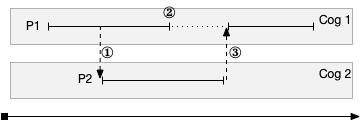
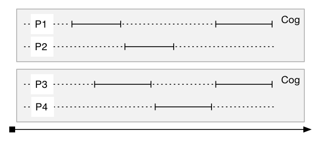
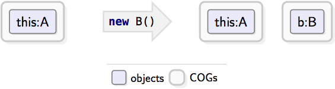
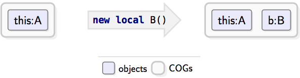

Introduction¶
The ABS language¶
ABS is an actor-based, object-oriented, executable modeling language. Its prime features are:
- Algebraic user-defined data types and side effect-free functions
All data (except the state of objects and future variables) is immutable, and functions are free of side effects. This makes understanding and reasoning about models easier.
User-defined data types are used for data modeling instead of objects, so ABS models are typically smaller than their Java counterparts.
- A syntax that is close to Java
Programmers familiar with Java can easily learn the ABS language.
- Distributed, actor-based semantics
Method calls are asynchronous and create a new process in the target. Processes are scheduled cooperatively and run within the scope of one object. Futures are used to synchronize with and get the result of another process.
- Interfaces for specifying object behavior
Similar to Java, the behavior of a class is defined by implementing zero or more interfaces with their corresponding methods.
- Safe concurrency
Processes run cooperatively within one object and do not have access to other objects’ state, and data structures are immutable. The language semantics avoids most common error causes of concurrent systems (aliasing, insufficient locking).
- Distributed computing
The combination of asynchronous method calls, immutability and strong encapsulation makes it easy to model distributed systems.
- A formal semantics and compositional proof theory
ABS is designed to be amenable to program analysis and verification. A variety of tools (deadlock checker, resource analysis, formal verification) exist.
Non-goals¶
Languages are eco-systems, and a language containing all possible features will be easy to use for no one. The following areas are currently under-served by ABS:
- Parallel computing
Algorithms relying on multiple processes operating on mutable state, e.g., from the domain of scientific computing, can only be expressed in roundabout ways.
- Close-to-the-metal programming
ABS is not designed to be a systems programming language.
The ABS actor and concurrency model¶
As mentioned, ABS method calls are asynchronous and create a new process in the target, while the caller process continues to run in parallel, as shown in Figure Process call semantics. At point ①, P1 issues an asynchronous call to some object residing on Cog 2. In response, Cog 2 creates a new process P2; P1 and P2 can run in parallel. At point ②, P1 needs the result of the method call and suspends itself. At point ③, P2 finishes and returns a value. Cog 1 then reactivates P1 to continue execution.

Process call semantics¶
The paragraph above elides some details. An asynchronous method call produces a future variable, which is used both to synchronize with the callee process and to get the result. Future variables are first-class objects that can be passed along, so several processes can synchronize on the same future.
The processes created by method calls are scheduled cooperatively and
run within the scope of the target object, that is, this evaluates
to the object. All Objects are contained in a COG (Concurrent
Object Group). Each cog runs one process at a time, while processes
on different cogs run in parallel, as shown in Figure
Processes running inside their cogs. This means that each cog is a unit of
concurrency and is in charge of scheduling the processes running on
its objects. Each process runs until it suspends itself (see
Await (statement) and Unconditional release: suspend) or terminates, at which
point the cog chooses the next process to run.

Processes running inside their cogs¶
A new cog is created by creating an object with a new expression (see Figure Creating an object in a new cog).

Creating an object in a new cog¶
An object in an existing cog is created via the new local expression (see Figure Creating an object in the same cog).

Creating an object in the same cog¶
Error propagation and recovery in ABS¶
ABS models exceptional (unforeseen and erroneous) situations using exceptions. This section gives an overview of the language constructs that deal with exception propagation and recovery.
Exceptions occur when a process cannot continue normal execution,
e.g., when trying to divide by zero or when no pattern in a case
expression matches the given value. Exceptions can also be thrown by
the modeler via the throw statement: Throw.
Exceptions thrown implicitly or explicitly are propagated and handled
in the same way.
The modeler can define new exceptions; see Exceptions.
Exceptions can be caught and handled locally, i.e., in a lexically
enclosing try-catch-finally block in the same method (see
Handling exceptions with try-catch-finally). In that case, the process continues
execution and will eventually produce a return value to its future.
In case of an unhandled exception, the future of the process does
not receive a return value; instead, it will propagate the unhandled
exception to the caller (or any process that tries to get its value).
When evaluating f.get on a future that carries an exception
instead of a normal return value, the exception will be re-thrown;
it can be handled as usual via try-catch or left to propagate
up the call chain of futures.
Additionally, terminating a process in the middle of execution might leave its object in an inconsistent state. To recover from this, ABS uses recovery blocks (see Classes). Unhandled exceptions are handed to the recovery block, which can take appropriate action to re-establish the class invariant and/or send asynchronous messages to other objects.